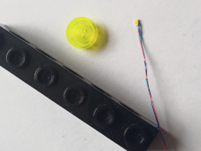
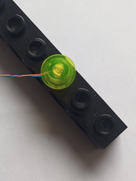
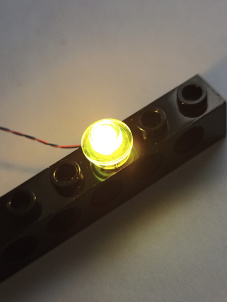
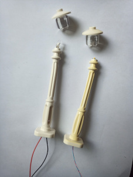
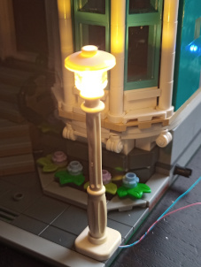
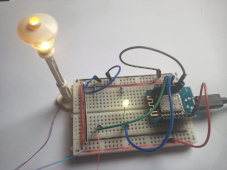
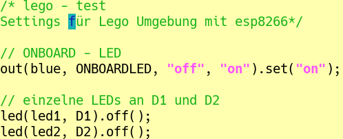

Als allererstes mal ein ganz kleines Licht:
Ich benutze SMD-LEDs Typ 0603 (verdrahtet).

Die sind winzig, lassen sich aber gut unter Plättchen klemmen.


Eigentlich sollen die mit Vorwiderstand an 5V betrieben werden. Ich hab das aber ohne Widerstand an 3,3V probiert (auch mehrere parallel geschaltet). Bei mir klappt das (ohne Gewähr!).
Beleuchtung mit LEDs
Beleuchtung mit rgb-Strip
Motoren
Automatisierung
Buchladen
Achterbahn
Karussell
Bisher ist die ganze Seite mit Lego-Beleuchtungen ja noch im Aufbau, detaillierte Anleitungen zu IoTempower fehlen bisher völlig.
Bei Bedarf wird diese Seite entsprechend ergänzt.
Anregungen und Nachfragen an:
walter (at) norbisrath.de

Um die LEDs in die Straßenlaterne einzubauen, muss man leider bohren. 1,5 mm Bohrer, sehr vorsichtig ohne Druck, aufpassen, dass es nicht zu heiß wird.
In die Latene passen nicht nur die SMD-LEDs, sondern auch die 3mm „Standard“-LEDs.
Der Vorwiderstand (wenn’s denn sein muss) hat im Fuß der Laterne Platz.
Die folgenden Test funktionieren nur mit eingerichtetem
IoTempower Anleitung im angegebenen Link.

Versuchen wir, das Ganze zum Laufen zu bringen:
Wir verbinden am esp8266 D1 oder D2 mit dem Pluspol (Anode) der LED und GND vom esp8266 mit dem Minuspol (Kathode) (-) der LED. D1 bzw. D2 liefern jeweils 3,3 V.
So sieht das dann in der Testumgebung aus.

Das setup dazu:

Schalten dann von der Kommandozeile aus:
$ mqtt_send led1/set on
$ mqtt_send led1/set off
bzw. dann komfortabler mit node-red